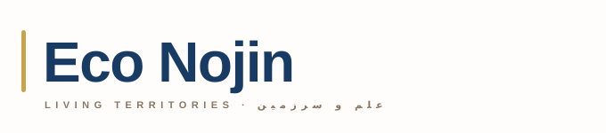
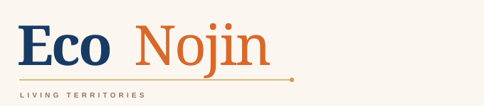
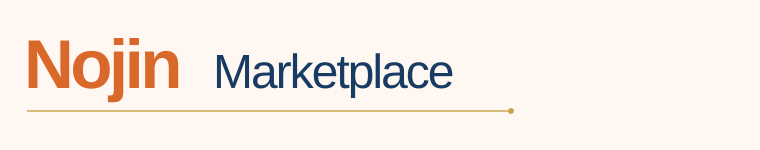

Overview — تصمیمگیری بصری مالک
این محیط فقط برای تصمیمگیری است؛ هیچ گزینهای انتخابشده نیست.
این استودیو شما را قادر میسازد بدون بررسی کد، تمام گزینههای واقعی هویت بصری را در کاربرد واقعی ببینید و تصمیم بگیرید. تمام تصمیمها در وضعیت OPEN باقی میمانند و هیچ انتخابی بهصورت خودکار اعمال نمیشود.
Logo Gallery — ۹ لوگوتایپ
هر لوگو در ۸ کاربرد واقعی + مقایسه Original/Outlined
Brand Family — معماری هویت سه برند
شخصیت مستقل + انسجام خانواده

Eco Nojin



HyDroMA


Nojin Marketplace


هماهنگی خانواده برند
- وزن فونتهر سه برند از وزنهای سنگین (Bold/ExtraBold) برای نام برند استفاده میکنند؛ تایپوگرافی خالص بدون نماد تصویری.
- تناسب حروفTracking منفی ملایم در نام برندها؛ فاصلهگذاری در تگلاینها بازتر است.
- ارتفاع بصریارتفاع的统一 در لوگوی افقی؛ چیدمان Stacked فقط در Eco Nojin (option 03) دیده میشود.
- شخصیت متمایزEco Nojin از Fraunces جدی؛ HyDroMA از Manrope/DM Sans فناورانه؛ Marketplace از Fraunces/DM Sans گرمتر.
- انسجامهمه لوگوها تگلاین انگلیسی + گاهی فارسی دارند و از پالت طلایی/سرزمینی مشترک استفاده میکنند.
Color Comparison — دو مسیر مستقل
فقط Theme عوض میشود؛ محتوا یکسان است
--brand-secondary-text) از مقادیر مرجع قابل تشخیصاند و فقط برای متن/دکمه استفاده شدهاند؛ پالت مرجع تغییر نکرده است.
Typography Lab — ۶ خانواده موجود
نمونههای یکسان برای مقایسه
Real UI Preview — محتوای یکسان، دو Theme
تعویض فوری Theme روی یک نمونه کامل
Decision Register — ثبت انتخاب مالک
تمام موارد OPEN؛ انتخاب نهایی با تأیید صریح شما
| شناسه | موضوع | وضعیت | انتخاب شما (اختیاری) |
|---|
localStorage همین مرورگر ذخیره میشوند (کلید eco-owner-decisions-v1). این انتخابها Design System اصلی را تغییر نمیدهند و به سرور ارسال نمیشوند.
Technical Open Items — موارد فنی باز
این موارد تصمیم هویت بصری نیستند
صفر فایل مجوز (License) در مخزن گزارش شده است. شش خانواده فونت همگی SIL OFL 1.1 هستند (بر اساس فراداده داخلی)، اما متن مجوز در مخزن موجود نیست.
- تا زمان افزودن و بررسی فایلهای License، وضعیت مجوزها تأییدنشده است.
- توصیه: افزودن متن OFL 1.1 و/یا فایل مجوز هر فونت کنار
assets/fonts/.
این دو فونت در CSS ارجاع شدهاند (--font-en و --font-mono) اما در بسته فونت محلی موجود نیستند. در حال حاضر با fallback (Segoe UI / system-ui و Consolas / monospace) نمایش داده میشوند.
- گزینهها: افزودن فایلهای Inter/JetBrains Mono با مجوز مناسب، یا تغییر توکنها به خانوادههای موجود.
- این موارد فقط نیازمند تصمیماند؛ هیچ فونتی دانلود یا تثبیت نشده است.
آزمون واقعی Screen Reader (NVDA/JAWS/VoiceOver) هنوز انجام نشده است. بررسی ARIA بهصورت ایستا انجام شده اما معادل آزمون Screen Reader نیست.
موارد زیر در رکورد provenance نمایش داده نشدهاند و باید تکمیل شوند:
- Dataset ID
- Parameter Set
- Spatial Extent
- Temporal Extent
- Unit System
این شکاف فنی است، نه مسئله هویت بصری.